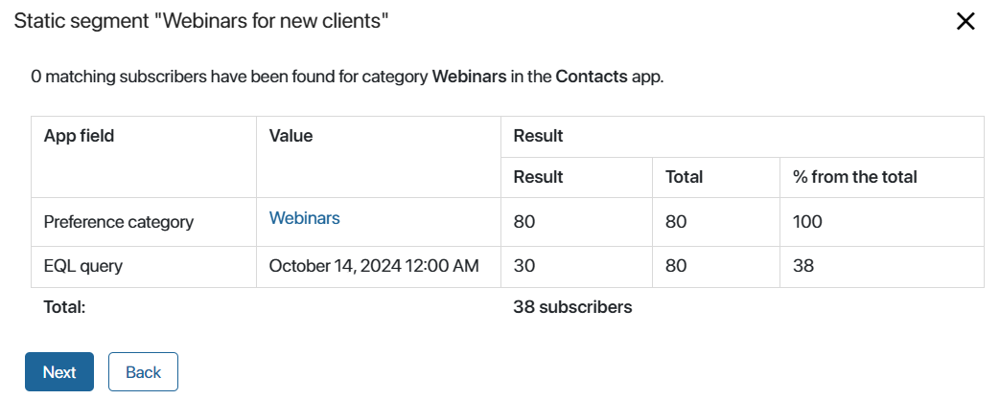

In the Segments of subscriber emails app, you can set up segments based on customer preferences. This allows you to organize your base of subscribers and group those customers who have agreed to receive the email campaigns and are interested in certain services into separate segments. Once you have created a customer segment, you can send them targeted offers and promotions only for those services that are of interest to these customers.
Different tools are available for creating segments:
- Subscriber filtering based on the context of the selected app.
- EQL query for selecting subscribers by properties from any app.
- API methods for importing segments of subscriber emails from an external system.

There are two types of segments:
- Static. The list of subscriber emails is saved when the segment is created or edited and does not change over time.
- Dynamic. Only the segmentation criteria are saved when creating a segment. The list of subscriber emails is not stored in the system and is formed each time when viewing or accessing a segment. This allows you to get up-to-date data on subscribers at the current moment.
On the Segments of subscriber emails app page, you will see all created segments with their type. To view only segments of a specific type, select the desired folder from the left menu.
Static segments
A static segment contains a fixed number of subscriber emails that are defined when the segment is created or edited. For example, such a segment can be used to call customers. Download the list of subscribers of the segment and attach it to the task. This list will be saved in the system and you can refer to it repeatedly, for example, to send emails after a call.
On the Segments of subscriber emails > Static page, you will see the creation date and the number of subscribers for each segment. The table also displays the parent segments based on which new static segments were created. Once you open the static segment data, you can manually edit the list of subscriber emails by adding and removing contact records.

Segments of subscriber emails that were automatically created based on the subscriber activities to whom bulk email campaigns were sent are also displayed as static segments: Read, Unread, Clicks, and No clicks. You can use these segments for new targeted bulk campaigns. For example, send follow-up emails to customers who have not read previous emails.
Please note that if a segment is generated in an external system, it can be retrieved using API methods only as a static segment.
Dynamic segments
The list of subscribers of such a segment is not stored in the system and is generated each time based on the segmentation parameters set in it. This allows you to get up-to-date data at the moment of viewing or accessing the segment. For example, when you created a segment according to the specified filter, it had 100 subscribers. You sent them emails with promotions. Within a week, you added 30 new subscribers according to the segment filter. If you send another email campaign to this segment a week later, the emails will be sent to 130 subscribers.
Unlike a static segment, the list of subscribers in a dynamic segment cannot be edited manually. There are also limitations when using API methods.
You can view all dynamic segments on the Segments of subscriber emails > Dynamic page.
To display the current list of subscribers of a dynamic segment, click on its name. You can update the list data by clicking the Update button in the upper-right corner of the page.
Add a segment
You can create a segment of any type. To do this, in the upper right corner of the Segments of subscriber emails app page, click +Segment of subscriber emails. In the opened window, fill in the fields.
The set of fields in the window can be different.
On the Segments of subscriber emails page, you can switch to creating a segment of any type and select it in the Segment type* field. On the Segments of subscriber emails > Static or Segments of subscriber emails > Dynamic page, you can create only a segment of the corresponding type, which is set by default in the Segment type* field. |

- Name*. Enter the name of the segment.
- Segment type*. Select the type of the segment.
- Parent segment. The field will be displayed only for a static segment. It allows you to create a new static segment based on an existing one. Then the Preference category* and App* fields will be filled in automatically.
- Preference category*. Select a category for the email campaign.
Next, select the method of subscriber segmentation: Filter or EQL query.
The Filter option allows you to set criteria for selecting subscribers using the context of a single app:
You can create a new parameter for filtering. To do so, click +Add Condition. To delete a condition, click the recycle bin icon. |
The EQL Query option allows you to specify the criteria for selecting subscribers using the context of any app (system, custom, or business solutions).
In the field below, enter the text of the EQL query. If it is incorrect, you will see an error message below. Read more about the rules of creating such a query in the EQL syntax article.

|
Save the settings. After that, a window with information about the segment based on the specified parameters will open.
In the table, you will see the set app fields and the conditions set for them or the EQL query mark. The results of subscriber filtering are displayed on the right: 
|
If the final number of subscribers does not meet your requirements, click Back and change the filtering options. To save the new segment, click Next.
Please note that a static segment must have subscribers. The dynamic one can be empty. Customers matching the specified conditions will be added to it later.
Once created, the segment will be added to the Segments of subscriber emails app and the page with the list of segments of the corresponding type.
You can also create a segment by retrieving data from an external system using API methods.
Actions with segments
To open the list of segments of subscriber emails, click on its name.
In a static segment, the list will be permanent from the moment you create or edit it.
In a dynamic segment, the list will be generated when you view it. You can update the dynamic segment data by clicking the Update button in the upper right corner of the page.
By default, detailed information about each subscriber is available in the table: contact name, company, position, work number, and work email. You can additionally display any contact data in the table, such as adding related leads, deals, and preference categories. To do this, click the gear icon in the top right corner of the page and select Table Settings.
Under the table header, you can view the conditions set to form the segment.

On the static segments page, you can manually edit the list of subscribers by deleting one or several at once. To do this, check the users and click the Delete Selected button in the upper right corner. This function is not available for a dynamic segment, because the list of subscribers is not saved in the segment and is generated according to the specified criteria at the moment the segment is accessed.
If a segment of any type is ready, you can proceed to create a bulk email campaign. To do this, click +Bulk email campaigns at the top of the page.
In the On-Premises edition, you can also create a triggered campaign. To do this, go to the Customer journey maps app.
Click the three dots icon in the upper right corner to proceed to the following actions:
- Export. Export information about subscribers to an .xlsx file. The data from the table columns that are displayed on the page will be exported. You can preliminarily change the set of columns in the table settings.
- Edit segment. Change the data specified when creating the segment. If a campaign was created for the segment, a warning window will be displayed.
- Copy segment. Create a new segment using a copy of the existing one. In the opened window, specify the name of the new segment. The rest of the data and the list of subscribers will be copied. The new segment will be added to the Segments of subscriber emails app page.
- Delete segment. Available if no campaign has been created for the segment and it is not used in the Customer journey map.
Please note that the system administrator can restrict the rights to edit and delete segments in the access settings of the Segments of subscriber emails app.
Found a typo? Select it and press Ctrl+Enter to send us feedback